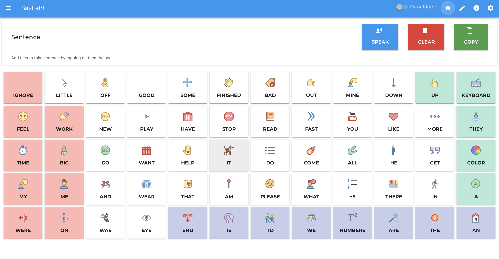

Helping non-verbal individuals find a voice
A free augmentative and alternative communication app

About the project
SayLah is based on the Freespeech app, which was created by Archer Calder in response to the few programs out there for non-verbal people that all cost upwards of $200 to $300. As a sibling of a non-verbal sister, he understood that these heavy costs can be big investments for families.e hopes Freespeech can get to the point where it can be a viable alternative to the other expensive apps out there. My goal is to help people communicate without a hefty cost.
We hope that SayLah can achieve the same, but for the local nonverbal population in Singapore. There is a lack of localisation in most AAC apps, which are clunky for their cost price. We envision SayLah to be a low-cost AAC tool which help help local nonverbal individuals to communicate.
This is a project by the non-profit volunteer-run techforgood community, better.sg. At better.sg, we brainstorm, build, and supercharge techforgood digital tools to address societal issues.
Get in touch with us
Contact Us if you have a story to share, feedback for us, or are interested in using the platform
for your school / organisation training needs.